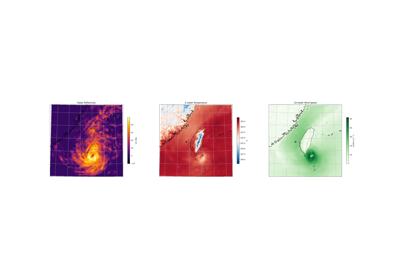

Examples#
This is a collection of examples in Earth-2 Studio that demonstrate various functionality and commonly used workflows.
Note
These examples can be downloaded as Jupyter notebooks and Python scripts on the `documentation website examples <>`_.
Running Simple Inference


Generative Down Sampling